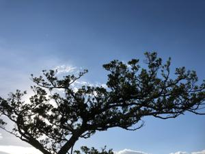
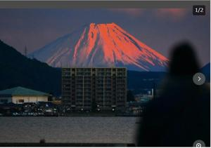

うるがいの話 ある日
最新: 赤富士【うるがいの話 ある日】とは 一日だけのプログです
『うるがいの話』の最新一日だけのプログで、通信料が少なく経済的だ。カニの画像をクリックすると全ての日付が載る『うるがいの話』サイトを表示します
|
|
【うるがいの話】 うるがい(ｳﾙｶﾞｲ urugai)とは、『もずくがに』の名前でとても大きくなります。 |
|---|---|
|
|
【カミマヤーの話】 猫のことを方言でマヤーといいます。カミマヤー（kamimayaa）とは、神の猫のことです。 |
|
【たながぁの音楽】 たながぁ（ﾀﾅｶﾞｰ tanagaa）とは手長えびのことで、何種類かあり大きいのは車 エビぐらいになります。 |

|
【ぶながぁの話】 ぶながぁ(ﾌﾞﾅｶﾞｰ bunagaa)とは、赤い髪の毛、赤い身体、そして身長は１ｍ２０ｃｍ ぐらい、川の蟹を食べているの目撃された。場所は沖縄県国頭郡大宜味村のと ある村僕の隣近所に住んでいる爺さんから、聞いた話です。 |
|
|
【ギーマの話】 ギーマ(giima)とは、山原の里山に咲くスズランに似た、 花を付けます。実は食べられます、 気が付くと口の周りが紫になっています。 |
2022年10月26日 (水）赤富士
16:10
 
ネットで、赤富士の写真を見る。はるか昔に小田原から伊勢原市にいく夕闇迫
る時間に電車の窓から、みた赤く染まった富士山にそっくりである。妹の嫁ぐ
相手の実家が伊勢原市にあり、挨拶を兼ねながらそこの家族と面会をし、一泊
した。帰りの羽田空港まで、車で送ってもらうついでに、鎌倉の鶴岡八幡宮、
江ノ島を観光する。飛行機の時間に間に合うか、イライラしたが・・・、妹は
やがて離婚し、戸籍から相手が再婚したのを後で知った。遠い昔である。
９月２日に申請したコロナ給付金が、先ほど振り込まれたと担当者からＬＩＮ
Ｅより連絡を受ける、長かった。
１６時００分 ビットコインの総資産 ￥８、６６２↑